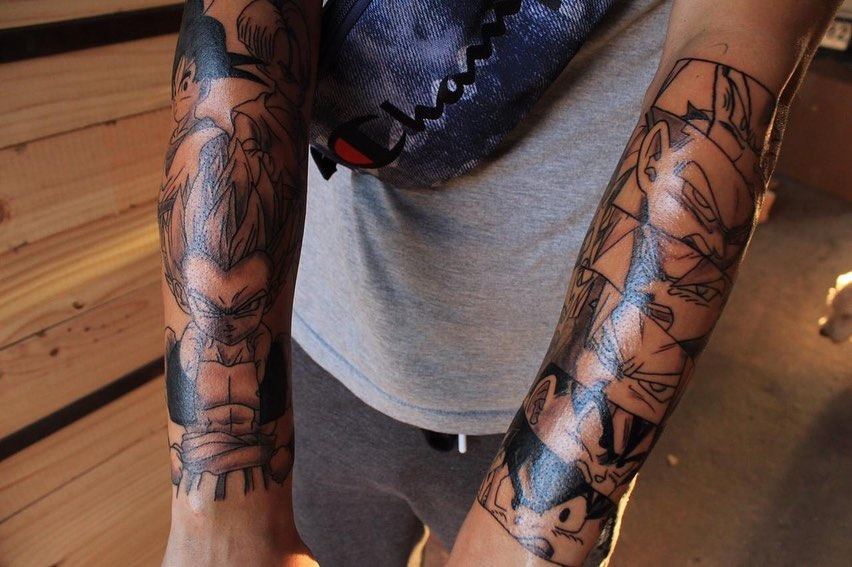
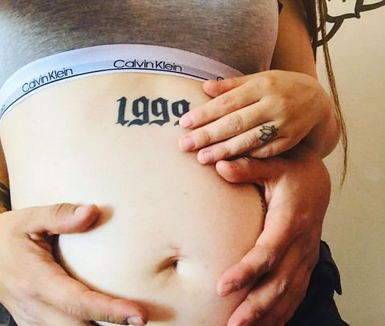

Transforma tus ideas en arte permanente con nuestros talentosos artistas, liderados por Oscarink, el joven chileno con una pasión por el arte corporal y la cultura hip hop.
"¡El mejor lugar para tatuarse! Los artistas son increíbles."
- Juan Pérez
"Mi tatuaje superó todas mis expectativas. ¡Gracias!"
- María López
Sí, seguimos todas las normas de higiene y seguridad.
El dolor varía dependiendo de la persona y la ubicación del tatuaje.
Desde el arte tradicional hasta el realismo y el arte urbano, cubrimos una amplia gama de estilos para satisfacer tus preferencias.